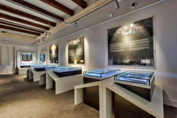
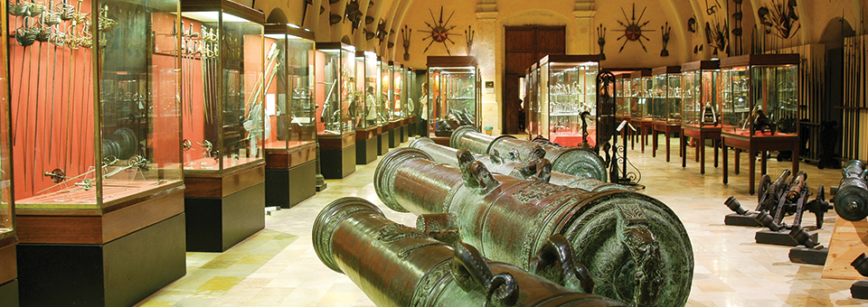
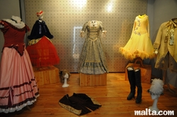
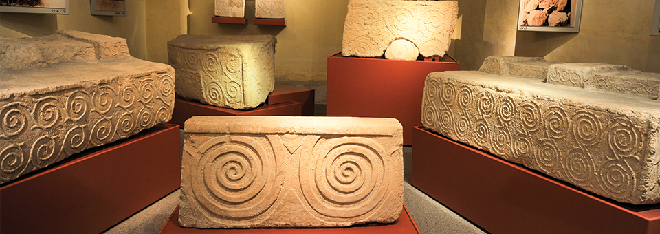
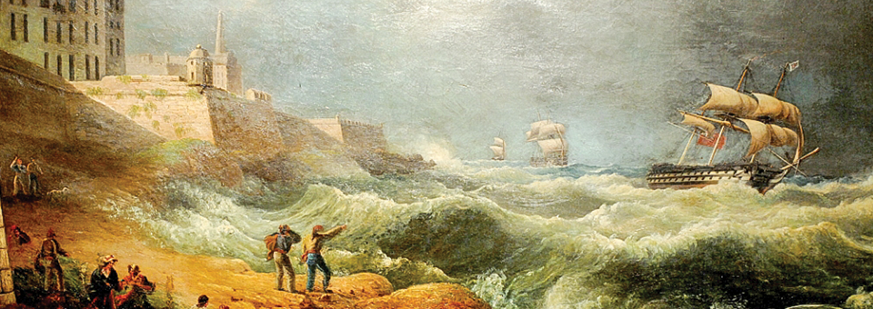
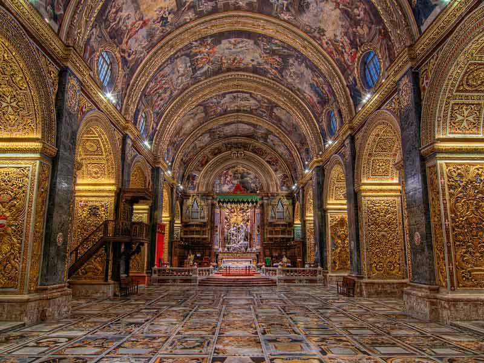

Malta Postal Musuem
135, Archbishop Street, Valletta, Malta
The Malta Postal Museum, located at 135, Archbishop Street, Valletta right next to The Palace is one of Malta's newest heritage attractions. Within our walls, we explore centuries of Maltese and Postal history starting early in the 16th century and moving on towards the present day. Located in a large restored town house and spread over four floors, the museum brings to life Maltese history and the important role played by the Post over the years.
_________________________________________________________________________
Armoury
Grandmasters Palace,, Palace Square, Valletta VLT 1191, Malta
The Palace Armoury is one of the world’s largest collections of arms and armour that is still housed in its original building. The Armoury contains some fine examples of mediaeval armour and weapons used by the Knights. Among the thousands of exhibits are Grand Master La Vallette’s suit of armour and a magnificent ceremonial suit worn by Grand Master Alof de Wignacourt..
_________________________________________________________________________
Manoel Theatre Museum
Manoel Theatre, 115, Old Theatre Street, Valletta, Malta
The Manoel Theatre Museum is located in the beautiful capital of Malta, Valletta, within The Manoel Theatre. The theatre was built in 1731, and is actually one of the oldest theatres in Europe where acting and music are still performed on stage.
The theatre has been fully restored to its earlier glory and is beautiful to look at; it is a wonderful setting in its own right. The Manoel museum was set up by the Fondazzjoni Patrimonju Malti as a tribute to three centuries of Theatrical History in Malta, exhibiting a range of memorabilia that has been put together from a wide range of sources, both public and private.
_________________________________________________________________________
National Museum of Archaeology
Auberge de Provence, Republic Street, Valletta VLT 1112, Malta
The National Museum of Archaeology is housed in the Auberge de Provence, in Republic Street, Valletta. The building, an example of fine Baroque architecture, was built in 1571 and followed a plan by local architect Ġilormu Cassar.
Displays items of pottery, sculptures, statuettes, stone implements and personal ornaments. Typical examples of Punic and Roman Tomb furniture along with the museum’s most prized exhibits – The Maltese Venus and The Sleeping Lady.
_________________________________________________________________________
National Museum of Fine Arts
South Street,Valletta VLT 1101, Malta
The National Museum of Fine Arts is located at the lower end of South Street (Valletta) within an area including other fine historical palaces dating from the time of the Order of St John of Jerusalem. The area is also well known for its wine bars and cafés and offers little-known breathtaking views of the city’s grid-shaped streets which visitors usually explore on their way to the museum..
On display are works by local and internationally renowned artists such as, Ribera, Mattia Preti, Mathias Stomer and many others. Also included in the Museum’s collection and on show are sculpture, furniture and other works of art connected with the Order of St. John, notably the ‘monetarium’ – a unique collection of coins.
_________________________________________________________________________
St. John’s Museum
St John’s Square, Valletta, Malta
The Oratory and Museum contain two masterpieces by Caravaggio, including the Beheading of St. John the Baptist. Also on display are the surviving Cathedral silver, a unique collection of clerical vestments and the Flemish tapestries depicting religious stories made in the late 17th century.
_________________________________________________________________________
Toy Museum
222 Republic Street, Valletta, Malta
The Toy Museum houses a very large and impressive collection of toys from the 1950s onward including model planes, boats, Matchbox cars, farmyard animals, trains and dolls.
Showcased on three floors are toys from the 1950’s onward. Of particular interest is a fine collection of Corgy, Dinky and Matchbox cars.
_________________________________________________________________________
War Museum
National War Museum, Fort St Elmo, Valletta, Malta
This War Museum represents the important role Malta and its people played during World War II as well as Malta’s important military role after 1800 under British rule. However, the museum displays also items from the First World War and from the two years of French Occupation. The collection recounts the story of events that led the two world wars, how they developed and as well as their consequences on both Malta and abroad.
The War Museum is packed with hardware, photographs and memorabilia from World War II, ranging from the heroic Gloster Gladiator – christened Faith, part of the trio of planes known as Faith, Hope and Charity, to the George Cross, awarded to the Maltese people for their bravery by King George VI in 1942.
_________________________________________________________________________
 Lower Barrakka Gardens
Lower Barrakka Gardens  Dinner In The Sky Malta
Dinner In The Sky Malta Vino's Cafe Bar
Vino's Cafe Bar